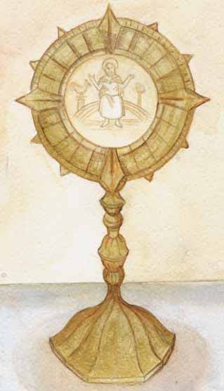
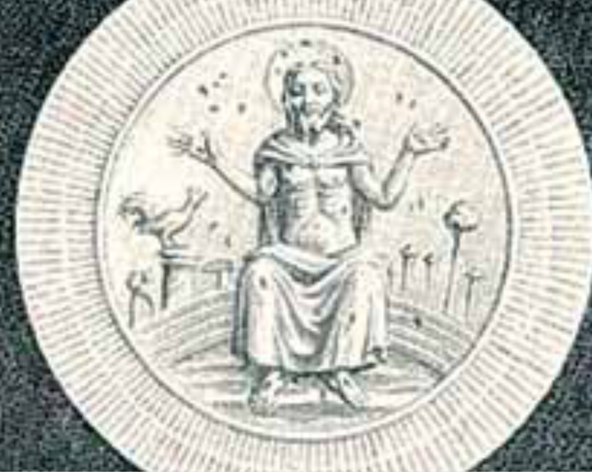
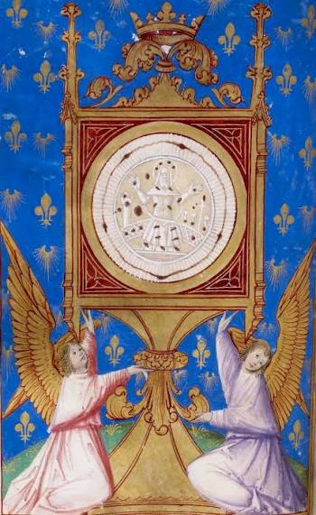

The 1430 Eucharistic Miracle of Dijon occurred when a woman in Monaco used a knife to remove a consecrated Host from a stolen monstrance. The Host miraculously bled, and as the blood dried, it imprinted an image of Christ seated on a throne, surrounded by instruments of the Passion.
Dijon Cathedral: Although the physical Host was destroyed, the miracle's legacy lives on. You can still see the main scene of the event depicted in the colorful stained-glass windows of the Cathedral of Saint-Benigne of Dijon.
Saint-Michel Basilica: At the Basilica of Saint-Michel, a special star marks the exact spot where the Host was burned in 1794. A Mass of Reparation is celebrated there annually to commemorate the event.
The Vatican: Historical documents and early artwork detailing the miracle are carefully cataloged in the Vatican's International Exhibition of Eucharistic Miracles.